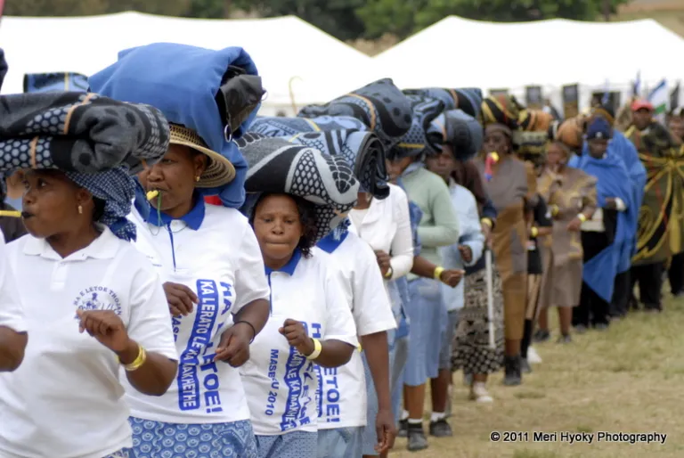

The Morija Arts and Cultural Festival offers a wide range of exciting activities for visitors. The programme is carefully designed to showcase the richness of Basotho culture through music, dance and art. Each activity provides an opportunity for visitors to experience something unique. The festival ensures that there is entertainment for all age groups.
From the opening ceremony to live performances, the festival schedule is full of vibrant experiences. Visitors can enjoy traditional dances, explore craft exhibitions and taste local food. The programme also allows tourists to interact with artists and performers. Every moment of the festival is designed to be memorable and enjoyable.
| Time | Activity |
|---|---|
| 09:00 | Opening Ceremony |
| 11:00 | Traditional Dance Performances |
| 13:00 | Food & Craft Exhibition |
| 15:00 | Live Music Concert |
| 17:00 | Closing Ceremony |
Visitors can expect a lively and engaging atmosphere throughout the day. The performances are colorful and full of energy, reflecting the rich traditions of the Basotho people. There are also opportunities to learn new cultural practices and enjoy local hospitality. The festival promises an unforgettable experience for everyone.
